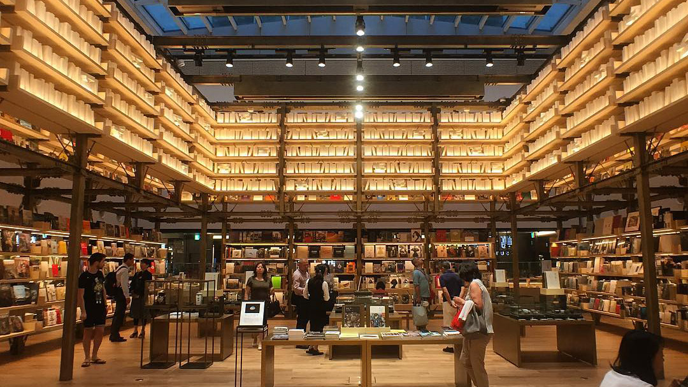
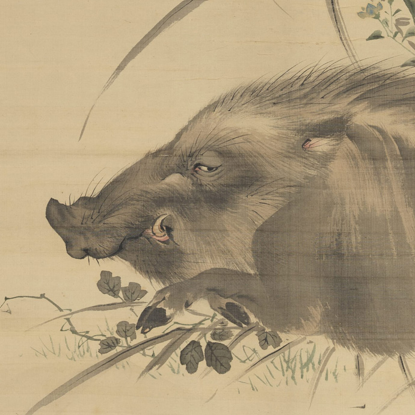
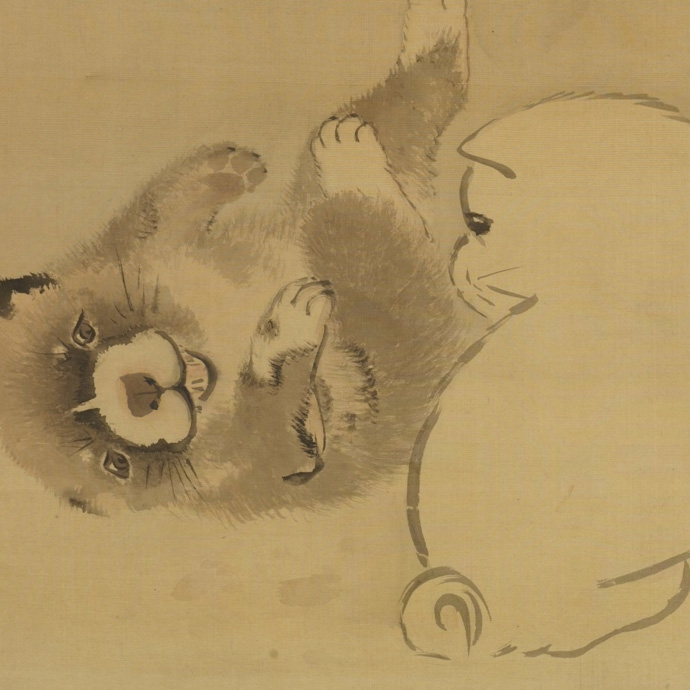
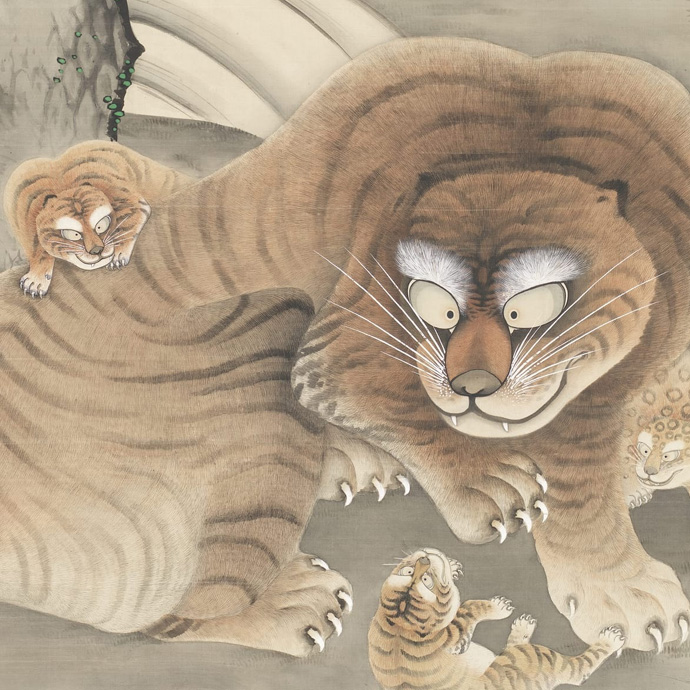

Tsutaya Ginza 6 Atrium, Ginza, TokyoEdo was a period of Japanese history (1603~1868) when artists innovated new ways to paint the natural world as stunningly alive.
Because artists saw themselves as part of nature, not above it, they opened their eyes and their hearts to all living creatures,bringing birds and fish, even plants and waves to enchanting life.
Discover A World of Edo Art and submit student art to Inspired by Edo 2027.

Wild Boar, Mori SosenA World of Edo Art is the online resource for Edo art that explores the art of Japan’s Edo era (1603~1868), with Videos, Activities and Readings for teachers and students to explore.
Browse over 200 masterpieces of Edo art, by subject, theme, artist, artistic techniques and museum.
A World of Edo Art will inspire students of every age to create their own art depicting nature.
All the resources are free!
Submit your art to Inspired by Edo 2027.
All students grades 1 ~ 12 who create art inspired by an artwork in A World of Edo Art are invited to submit their best work online.
Students can create the art in class, with their friends, or on their own.
To Enter:

Gamboling Puppies, Maruyama Ōkyo
Tiger Family and Magpies, Tani Bunchō
See you at the NAEA national convention New York City!
(Sign-up for your free poster at Booth ###)
Inspired by Edo gratefully acknowledges UCLA’s Japan Past and Present.